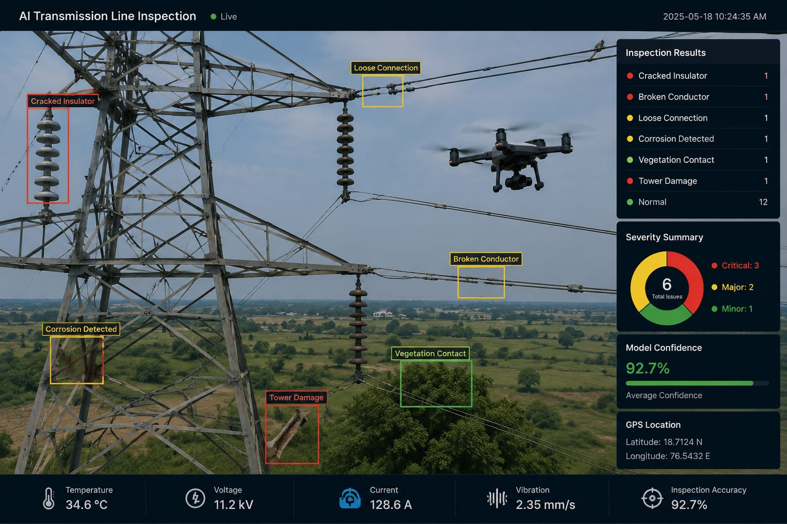
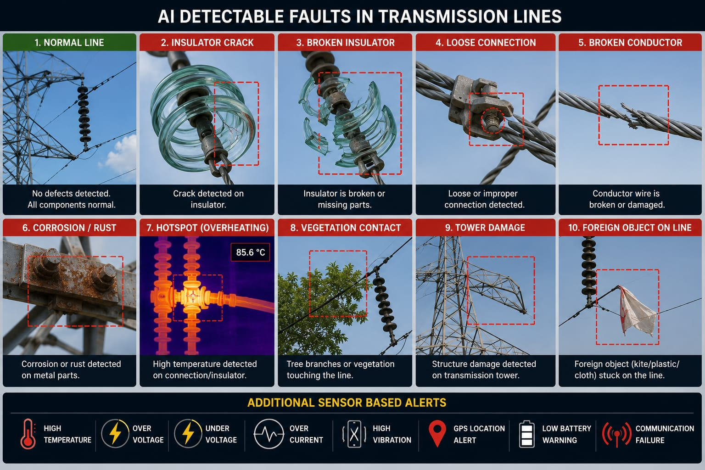
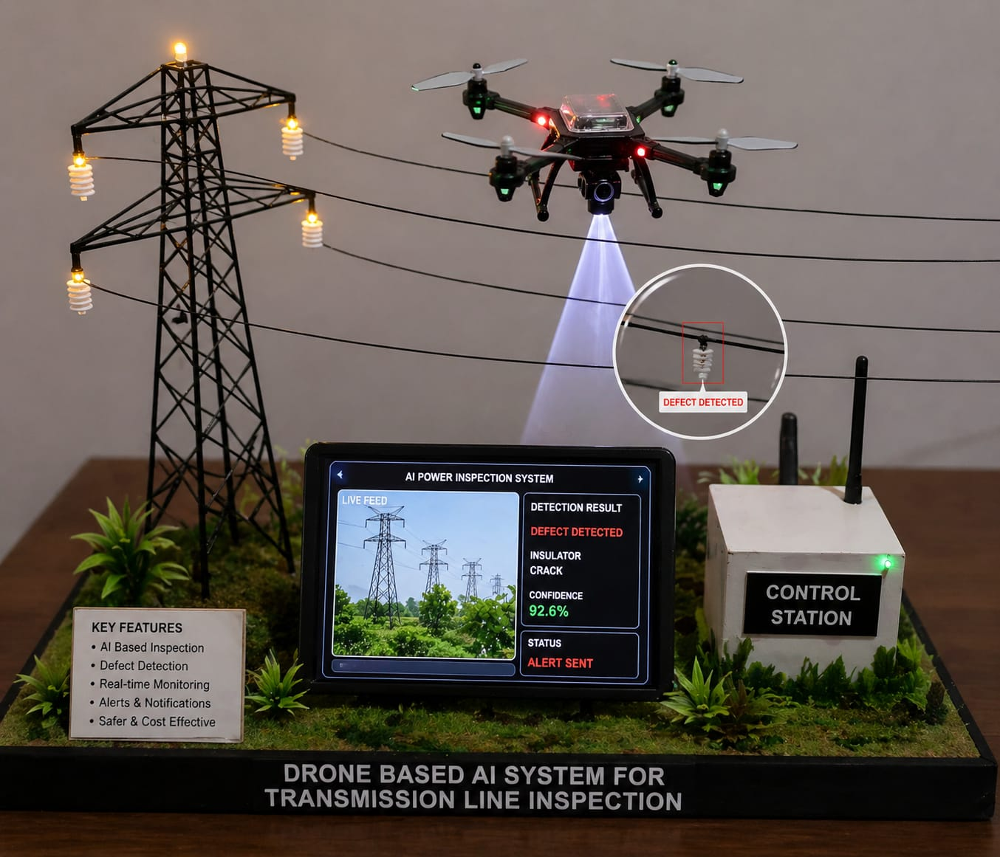
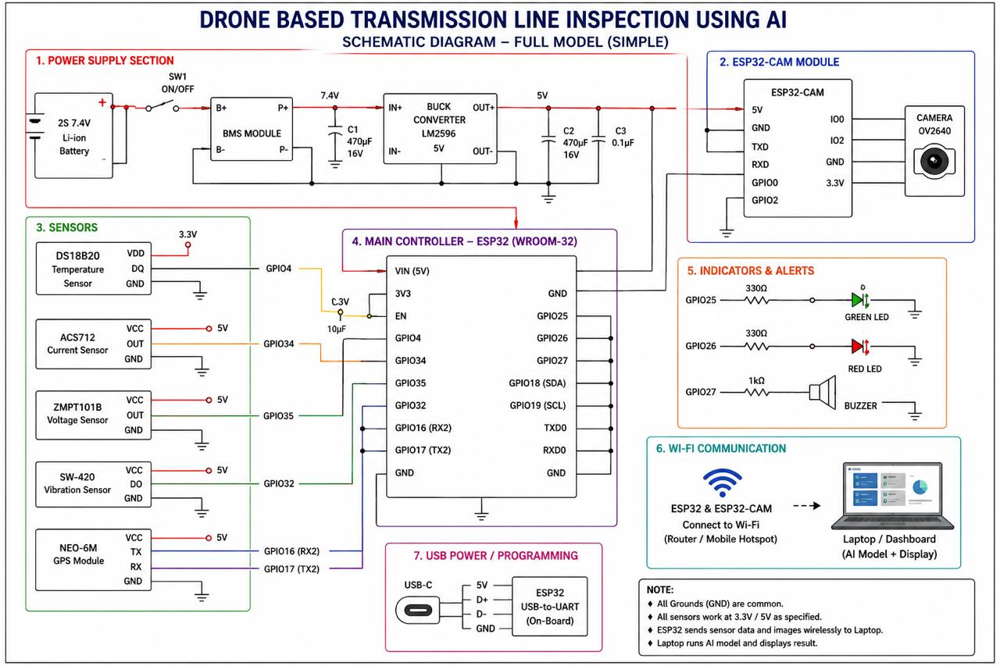

AI-Powered Drone Line Inspection
Inspect electrical transmission lines safely and efficiently using drones and Artificial Intelligence. Detect faults faster, reduce manual inspection, and improve maintenance planning.


About the Project
DroneInspect is an AI-powered inspection system that automates transmission line monitoring using drones, computer vision, and machine learning. It enables utilities to detect damaged components quickly while reducing inspection time, operational costs, and risks to human inspectors.
Problem Statement
Manual Inspection
Engineers must travel long distances and climb towers, making inspection slow and labor-intensive.
Safety Risks
High-voltage transmission lines expose workers to hazardous environments.
Delayed Detection
Faults are often discovered too late, resulting in equipment failure and outages.
Our Solution
Our system combines drones, Artificial Intelligence, and computer vision to automate inspection of power transmission lines. High-resolution images captured by drones are analyzed using AI models to detect defects accurately and generate inspection reports.
- ✔ AI-Based Fault Detection
- ✔ Automated Inspection
- ✔ High Accuracy Analysis
- ✔ Improved Worker Safety

95%
Detection Accuracy
70%
Faster Inspection
24/7
Monitoring
100+
Inspection Reports
Key Features
🚁 Drone Inspection
Capture high-quality aerial images and videos of transmission lines.
🤖 AI Detection
Detect damaged insulators, broken conductors, corrosion, and vegetation interference.
⚡ Fast Inspection
Reduce inspection time significantly compared to manual methods.
📊 Smart Reports
Automatically generate inspection reports with detected faults.
🛰 GPS Tracking
Track drone routes and inspection progress using GPS technology.
🔒 Secure Data
Securely store inspection data for future analysis.
How It Works
1. Drone Flight
Drone captures high-resolution images of transmission lines.
2. Upload Images
Images are uploaded to the inspection platform.
3. AI Analysis
Artificial Intelligence detects faults automatically.
4. Report
Inspection reports are generated for maintenance teams.
Technology Stack
Frontend
HTML5, CSS3, JavaScript
Backend
Python (Flask/FastAPI)
Artificial Intelligence
YOLOv8, OpenCV, TensorFlow
Database
PostgreSQL / MySQL
System Architecture

DroneInspect integrates drones, AI models, cloud storage, databases, and reporting modules into one intelligent inspection platform.
Benefits
Safety
Reduces human exposure to hazardous environments.
Accuracy
Detects faults with high precision.
Fast Inspection
Completes inspections much faster.
Cost Effective
Reduces operational and maintenance costs.
Future Scope
- Real-time Drone Monitoring
- Live Video AI Detection
- Predictive Maintenance
- Cloud-Based Dashboard
- GIS Integration
Project Team
Sayalee Nichante
Frontend Developer
Member 2
Backend Developer
Member 3
AI Engineer
Member 4
Database Engineer